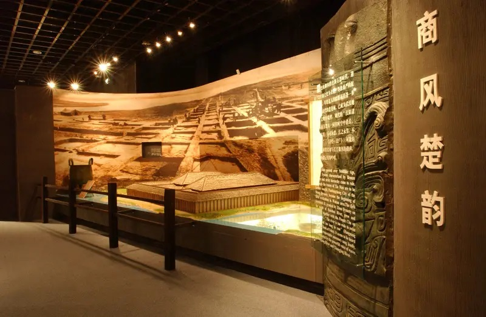
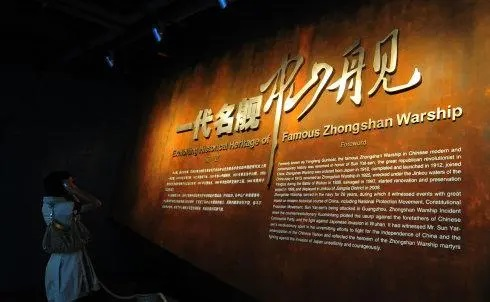
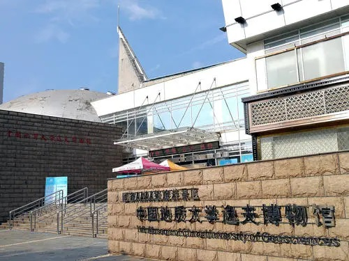

湖北省博物馆
湖北省博物馆筹建于1953年，坐落于湖北省武汉市武昌区东湖风景区，占地面积81909平方米，建筑面积49611平方米，展厅面积13427平方米，有中国规模最大的古乐器陈列馆。
武汉博物馆
武汉博物馆总建筑面积17834平方米。陈列面积6000平方米，库房面积4000平方米。对称形的建筑结构，层层叠起的外立面、自然粗犷的花岗岩贴壁及金字塔形三角玻璃顶，馆内中央大厅为网架玻璃穹顶。 [5] 一楼三个展厅；二楼是武汉博物馆的基本陈列；三楼展区面积1000平方米，分为1个序厅、3个展厅。
武汉辛亥革命博物馆
辛亥革命博物馆，是武汉市为纪念辛亥革命·武昌首义100周年而兴建的一座专题博物馆， 位于湖北省武汉市武昌区彭刘杨路258号，北临彭刘杨路，南抵张之洞路，东邻楚善街，西靠体育街， 总建筑面积22142平方米，是首义文化区的核心建筑，与鄂军都督府（红楼）、孙中山铜像、拜将台铜像、 烈士祠牌坊等同处一条轴线。辛亥革命博物馆于2009年8月动工兴建，2011年9月落成.
武汉市中山舰博物馆 
武汉市中山舰博物馆，位于湖北省武汉市江夏区金口街特1号，是一座专题性纪念性博物馆， 以“中山舰”的名字命名，展示了抗日英烈为国捐躯，铁血悲歌的革命精神，建筑面积11000平方米， 1999年12月成立，2011年9月26日正式对外开放，2016年和2017年，均接待逾60万参观者。
江汉关博物馆

江汉关博物馆（武汉国民政府旧址纪念馆、詹天佑故居博物馆）是一所综合性地方博物馆， 由江汉关博物馆、武汉国民政府旧址纪念馆、詹天佑故居博物馆三馆组成，是以收藏、保护、研究和 展示与武汉近现代历史相关的各类文物、文献及实物为主，为社会及其发展服务的非营利性永久机构。
逸夫博物馆 
中国地质大学逸夫博物馆是全国首家被认定为国家AAAA级旅游景区的高校博物馆。博物馆的前身可以 追溯到北京地质学院博物馆，始建1952年。建馆初期，标本主要继承了北京大学地质系、清华大学地质系、 天津大学（北洋大学）地质系和唐山铁道学院地质科的收藏。2003年更名为中国地质大学逸夫博物馆。 据2018年5月官网资料显示，博物馆建筑面积近万平方米，陈列展示面积5千余平方米，馆藏各类地质标本 3万余件 。2018年9月，被确定为国家三级博物馆